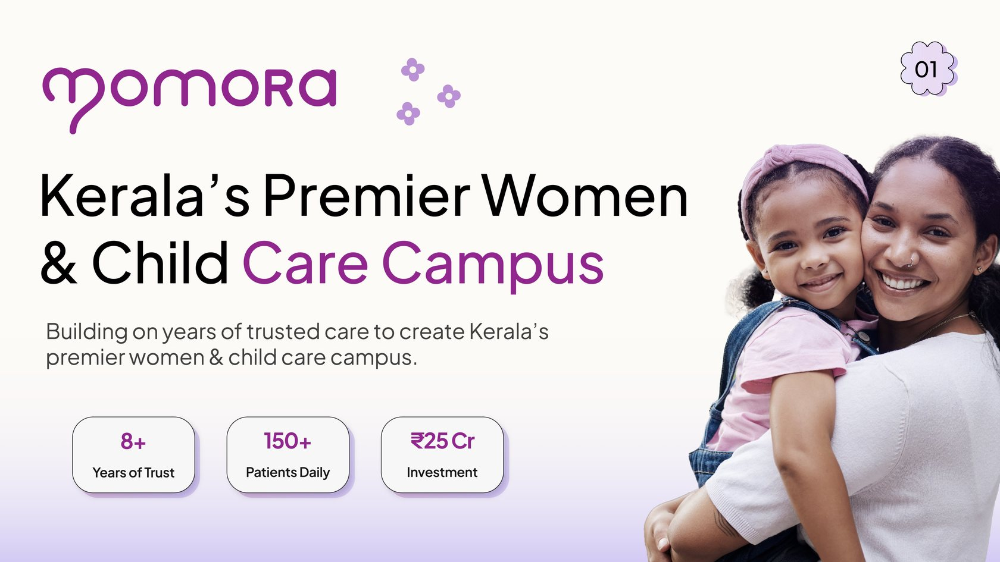
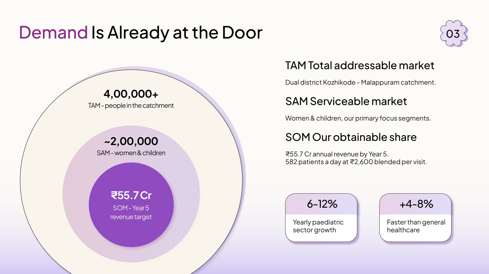
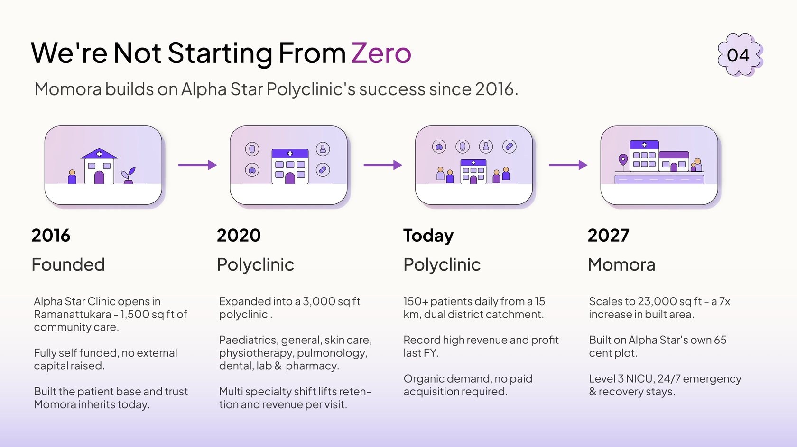
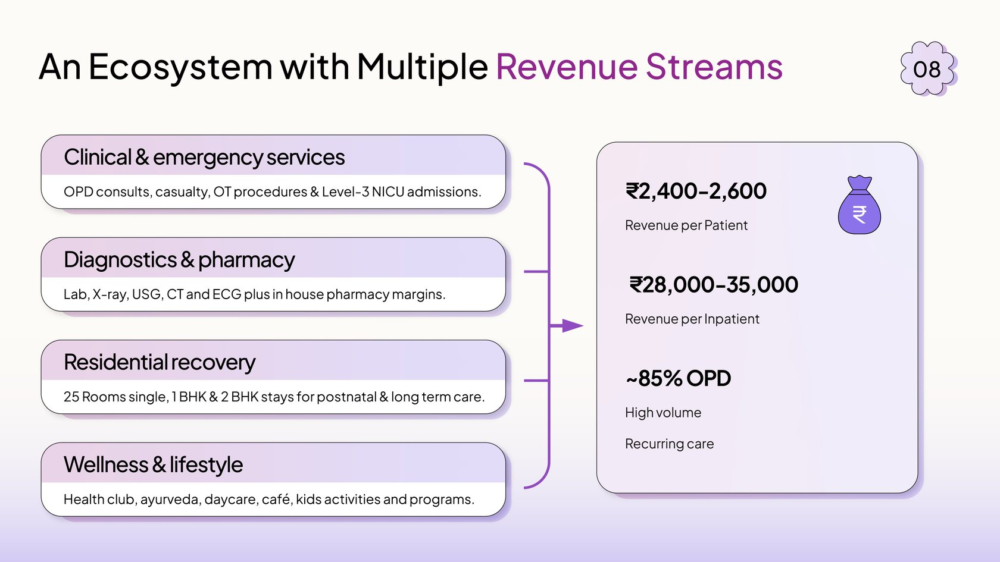
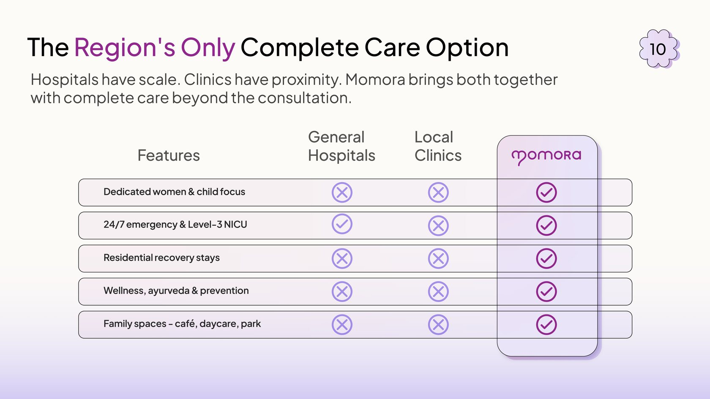
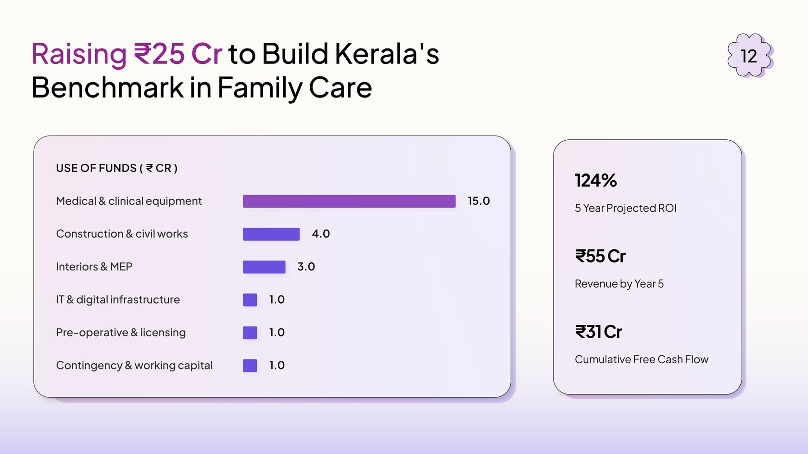

Pitch Deck for Kerala's first complete women & child care campus












Momora is scaling Alpha Star, an eight-year-old Kozhikode polyclinic, into a 23,000 sq ft multi-specialty campus for women and children. The founders already had the hardest part: 150+ daily patients and eight years of organic, no-paid-acquisition demand. What they needed was a deck that connected that traction to a ₹25 Cr ask.
Goal:
A pitch deck that turns eight years of patient trust into a fundable growth story — proof first, ask last — without losing investors in service-line detail or Kerala-specific market context.
Challenges:
- Proving a 7x scale-up from an existing polyclinic without reading like a greenfield bet
- Heavy service-line detail — Level-3 NICU, postnatal recovery, pediatrics — that had to land as one ecosystem, not a hospital directory
- Local catchment data, patient volumes, and a full financial model all competing for room on every slide
- A category that doesn't exist in Kerala yet, so the deck had to name "complete women & child care campus" before pitching it
What we did:
- Opened with catchment demand proof, then the gap in Kerala's current care model, then the campus plan
- Mapped the five-stage family journey that turns one delivery into a lifetime of visits and revenue
- Built a proof-first narrative arc — traction and market slides before the financial ask
- Closed on a use-of-funds table clean enough to underwrite in a single sitting
Project Highlights:
Where others see one delivery, Momora creates five revenue moments — antenatal, delivery, recovery, childhood, and lifelong wellness, all under one roof. The family-journey slide walks investors through each stage with the same visual language: a single family line moving left to right, each stop tagged with the service and the revenue it unlocks. By slide seven the viewer understands the LTV model without reading a spreadsheet.
The traction slide had to carry the most strategic claim in the deck: that Momora isn't starting from zero. We led with eight years of Alpha Star data — 150+ daily patients, organic demand, no paid acquisition — before showing the 7x campus expansion. Existing proof sits above the vision, so the scale-up reads as earned momentum, not ambition alone.
The deck opens with market demand, moves through the care gap in Kerala, then the campus ecosystem, then the family journey, then revenue and competition, and closes on team, ask, and use of funds. Putting proof up front gives the viewer the full thesis in under a minute and lets every slide after it go deep without losing the thread. By the time the ₹25 Cr ask arrives, the premise is already bought.
The deck cycles through structurally distinct slide types: a cover with campus render, a stat-heavy demand slide, a before/after care comparison, a service ecosystem grid, a family journey timeline, a revenue projection chart, a competitive landscape, a team grid, and a use-of-funds table. Each one is visually different from the next, and the deck still reads as one piece because the same anchors hold across all of them — headline top-left, Momora mark top-right, warm healthcare palette, consistent typography. The variety does the work of pacing; the consistency keeps it from feeling like thirteen different decks stitched together.
Results:
- A 13-slide deck that connects eight years of traction to a ₹25 Cr raise in one read, without needing a walkthrough
- Complete women & child care campus positioned as Kerala's first — a named category, not a generic hospital pitch
- A proof-first narrative structure the team can extend across future investor materials and partner conversations
- A visual framework that holds together across stat slides, ecosystem diagrams, journey maps, and financial tables
A word from the client
They didn't just design slides — they figured out how to tell a story we'd been living for eight years but couldn't explain on paper. The deck does the heavy lifting on intro calls so we can spend the time on the parts that matter.
Momora founding team
Alpha Star Polyclinic · Kozhikode, Kerala